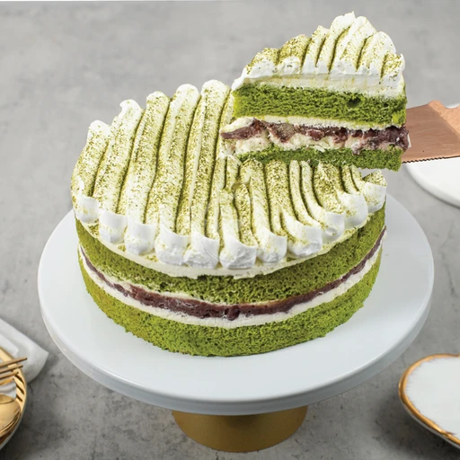
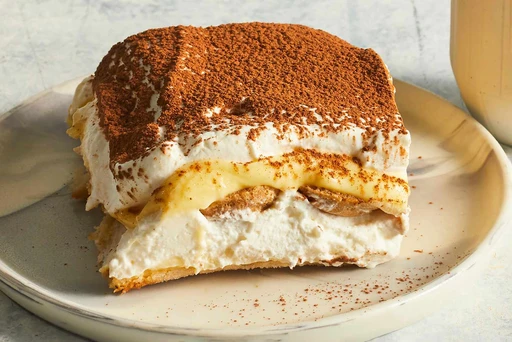
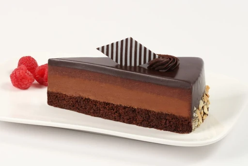

Macarons: Colorful and light French delicacies made with almond flour, filled with various flavors like chocolate, coffee, and strawberry, offering sweetness and delicate texture in every bite.
Japanese Matcha Red Bean Cake (Matcha Red Bean Cake): The blend of matcha and red beans in Japanese desserts creates a unique taste, where the aroma of matcha cake complements the sweetness of red beans in a beautifully balanced manner.
Tiramisu: A classic Italian treat with finger biscuits soaked in strong coffee and rum, layered with cream cheese and cocoa powder, providing a delightful combination of textures and a strong coffee taste.
French Chocolate Mousse Cake: Irresistible with its rich, creamy chocolate mousse, offering a silky texture and intense chocolate flavor.
